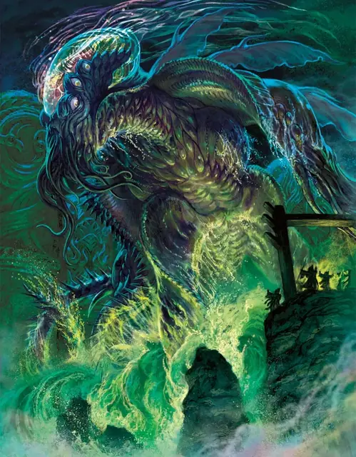

Ктулху
Cthulhu
Громадная Аберрация, Хаотичная Злая, именной НИП

Класс Защиты 19 Инициатива +9 (19)
Хиты 385 (22к20 + 154)
Скорость 30 футов, Плавания 60 футов, Лазания 30 футов
| мод | спас | ||
|---|---|---|---|
| СИЛ | 29 | +9 | +9 |
| ЛОВ | 12 | +1 | +1 |
| ТЕЛ | 25 | +7 | +15 |
| мод | спас | ||
|---|---|---|---|
| ИНТ | 28 | +9 | +9 |
| МДР | 18 | +4 | +12 |
| ХАР | 24 | +7 | +15 |
Сопротивление урону Кислота, Психический, Холод, Электричество
Иммунитеты Испуганный, Истощение, Отравленный, Очарованный, Парализованный
Чувства пассивное Восприятие 22, Истинное зрение 120 футов
Языки Все, Телепатия 120 фт.
Опасность 25 (75 000 опыта или 90 000 опыта в Домене; БВ +8)
Особенности
Восстановление Тёмного владыки. Спустя 1к10 недель после смерти Ктулху возрождается с полными Хитами в Узилище Ктулху.
Легендарное сопротивление (4/день, или 5/день в Домене). Если Ктулху проваливает спасбросок, он вместо этого может в нём преуспеть.
Амфибия. Ктулху может дышать как воздухом, так и под водой.
Невозможная геометрия. Земля, вода и воздух в 10-футовой Эманации, исходящей от Ктулху, всегда считаются Труднопроходимой местностью. Существо, начинающее свой ход в Эманации, получает 7 (2к6) Дробящего урона.
Сопротивление магии. Ктулху совершает с Преимуществом спасброски от заклинаний и прочих магических эффектов.
Действия
Мультиатака. Ктулху совершает три атаки Неземными когтями и использует Сотворение заклинаний (Помутнение разума, если оно доступно; или Пронзание разума, версия 4-го уровня). Он может заменить одну из атак Неземными когтями использованием Щупалец.
Неземные когти. Бросок рукопашной атаки: +17, досягаемость 10 фт. Попадание: 18 (2к8 + 9) Рубящего урона плюс 9 (2к8) урона Кислотой. Если цель — существо Большого размера или меньше, она Схвачена (Сл освобождения от захвата 19) одной из двух рук.
Щупальца. Спасбросок Телосложения: Сл 25, одно Схваченное Ктулху существо. Провал: 21 (6к6) урона Кислотой плюс 13 (3к8) Психического урона. Успех: Только половина урона. Провал или успех: Максимум Хитов цели снижается на число, равное полученному Психическому урону, а Ктулху восстанавливает такое же количество Хитов
Сотворение заклинаний. Ктулху сотворяет одно из следующих заклинаний, не нуждаясь в компонентах заклинания (заклинательная характеристика — Интеллект, Сл спасброска заклинаний 25):
Неограниченно: Пронзание разума, версия 4-го уровня
3/день каждое: Гейс, Грёзы
1/день каждое: Планарный переход, Помутнение разума
Бонусные действия
Червоточина. Ктулху телепортируется в видимое им незанятое пространство в пределах 120 футов; Схваченные Ктулху существа переносятся вместе с ним. Затем все существа в пределах 10 футов от покинутого им пространства подвергаются следующему эффекту. Спасбросок Силы: Сл 25. Провал: 7 (2к6) Дробящего урона плюс 7 (2к6) урона Звуком, и если цель — существо Большого размера или меньше, она Опрокидывается. Успех: Только половина урона.
Легендарные действия
У этого существа есть 3 использования Легендарных действий (или 4 использования в Домене); оно может немедленно после окончания хода другого существа потратить одно использование, чтобы совершить одно из следующих действий. Существо восполняет все потраченные использования в начале каждого своего хода.
Мёртвая хватка. Ктулху совершает одну атаку Неземными когтями.
Сворачивание пространства. Спасбросок Харизмы: Сл 25, все существа и объекты, которые никто не несёт и не носит, в 10-футовой Сфере с центром в точке, видимой Ктулху в пределах 60 футов. Провал: 36 (8к8) Силового урона, и цель телепортируется в горизонтальное по отношению к Ктулху незанятое пространство в пределах 60 футов от Ктулху. Успех: Только половина урона. Провал или успех: Ктулху не может совершить это действие снова до начала своего следующего хода.
Бонус мастерства +8
Ктулху
Тёмный владыка, что пребывает в вечности
Ктулху был — и неизбежно станет вновь — угрозой для всей мультивселенной. Неисчислимые века Тёмные Силы удерживают этого предвестника рока в оковах. В отличие от прочих узников Доменов Ужаса, Ктулху не терзаем ироническими муками и не страдает от несбыточных амбиций. Вековечный ужас попросту скован физически и способен проявлять лишь крошечную долю своей чудовищной мощи. Однако сны Ктулху просачиваются за стены его темницы, манипулируют разумами и направляют события так, чтобы обеспечить освобождение Великого Древнего и новую эру гибели вселенных.
История Ктулху
Порождённый за границами мультивселенной, в реальностях, где время и жизнь почти ничего не стоят, Ктулху — слуга древних зол и глашатай их неизбежного торжества. Бессчётные эпохи воля Ктулху воздействовала на восприимчивые умы по всей мультивселенной, проникая во сны, и через них отворяла врата в Дальний Предел. Через такие порталы Ктулху посещал Материальный план, развращал и опустошал цивилизации, возводил монументы величиной с города во славу своих могучих предтеч.
Подобные искажения и осквернения не остались незамеченными Тёмными Силами. Много раз Туманы смыкались вокруг ужасного Ктулху, и много раз он ускользал от них. Затянуло же его в Царство Теней, когда давно исчезнувший кабал магов призвал его на одном из мёртвых миров Материального плана в момент парада затмений, что случается раз в эпоху. Усиленная магия Царства Теней подняла Туманы и затянула в них Ктулху. Неистовствуя и цепляясь, Ктулху утащил за собой обломки былых завоеваний и жестокие разумы, связанные с его собственным. Эти разрозненные кошмары стали основой его темницы — сюрреалистичного острова, скрытого среди Доменов Ужаса.
Домен Ктулху
Иннсмут, домен Ктулху, изменяется из-за его присутствия, что создаёт следующие эффекты:
• Закрытие границ. Когда Ктулху находится в домене, он способен по желанию закрывать или открывать границы Иннсмута. Когда границы закрыты, существа, вошедшие в окружающие Иннсмут Туманы, теряются в море посреди чернильного тумана и блуждают 3к4 дня, прежде чем вновь оказаться в Иннсмуте.
• Удушающие глубины. Существа в домене могут задерживать дыхание не дольше чем на 30 секунд.
• Дурное предчувствие. Все существа, кроме Ктулху и его союзников, совершают с Помехой спасброски на избежание и окончание состояния Испуганный.
Если Ктулху умирает, все эти эффекты мгновенно исчезают. Они возникают вновь, если Ктулху возрождается (см. Восстановление Тёмного владыки).